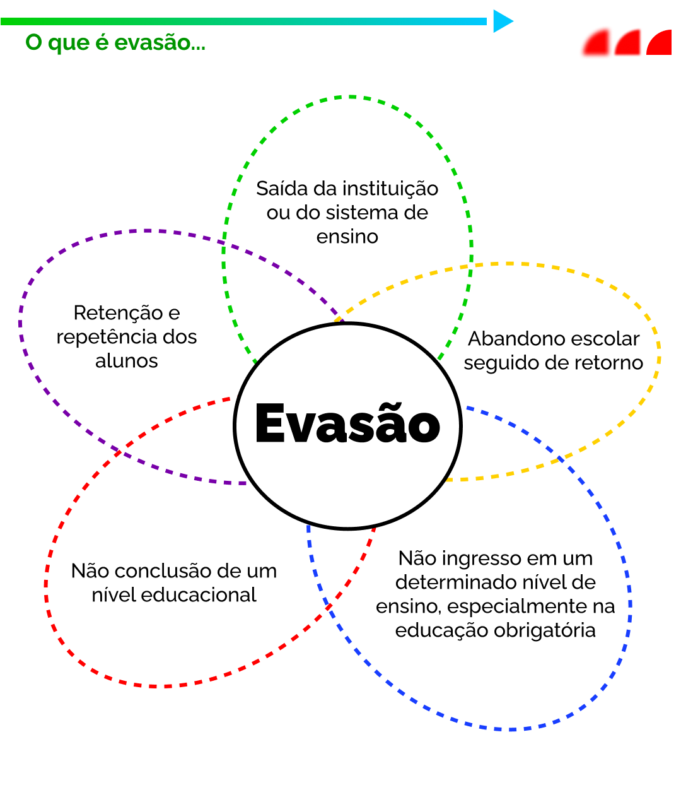
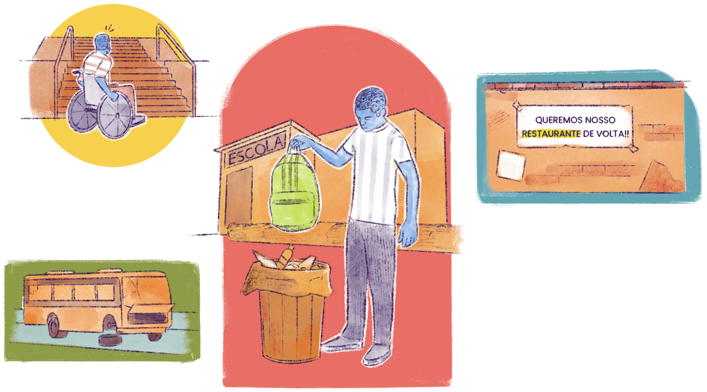

Fatores associados à evasão na EPT
Ainda no capítulo anterior, vimos que a evasão na EPT é um fenômeno complexo atrelado a fatores pessoais, institucionais e sociais. Além disso, no livro organizado por Rosemary Dore Heijmans, Adilson César de Araújo e Josué de Sousa Mendes (2014), estudos apontam que as metodologias pedagógicas e o nível de adequação do currículo às realidades dos alunos contribuem para uma maior ou menor evasão, a despeito das condições socioeconômicas.
Não podemos esquecer que, ao longo da história da educação capitalista, usou-se o discurso da responsabilização individual dos estudantes como verdadeiramente responsáveis pelo fracasso escolar. Esses eram frequentemente rotulados como incapazes. Nessa ótica, o fracasso era sempre individualizado e nunca visto como algo que também pode ser construído por fatores sociais e institucionais, que incidem sobre as questões pedagógicas.
Sugerimos também a leitura do capítulo "Evasão nos cursos técnicos de nível médio da rede federal de educação profissional de Minas Gerais", de Rosemary Dore, Paula Elizabeth Nogueira Sales e Tatiana Lage de Castro.
A evasão escolar pode manifestar-se de várias formas, e é importante ressaltar que não possui causas específicas que atuam de forma direta, mas fatores intervenientes cujas relações se sobrepõem e contribuem para a evasão. Ela é caracterizada de diversas formas, tais como:

Título: O que é evasão?
Fonte: Prosa (2025b).
Além disso, alguns estudantes, ao concluírem um nível de ensino, desistem de dar continuidade aos estudos. Portanto, a evasão escolar, tanto na Educação Básica quanto na Educação Profissional, está intimamente relacionada ao grau de democratização no acesso a essas modalidades de ensino. Podemos ver esta relação se analisarmos com atenção os fatores destacados no capítulo anterior que têm relação direta com a evasão, como: i) a dificuldades de aprendizagem em etapas anteriores da formação escolar; ii) a incompatibilidade de horário com as jornadas de trabalho; iii) responsabilidades familiares e constrangimento do retorno ao ambiente escolar; iv) ausência do sentimento de pertencimento.
Teorias e Modelos Explicativos sobre Evasão
Desde a década de 1950, vários estudos são realizados sobre evasão escolar, sendo o modelo de Vincent Tinto (1975) um dos mais influentes. Segundo esse autor, a decisão de evadir está relacionada à falta de integração do estudante com o ambiente acadêmico e social da instituição.
Posteriormente, Russell Rumberger e Scott Thomas (2000) conduziram pesquisas em escolas urbanas dos Estados Unidos para investigar as causas da evasão escolar. Naquele contexto, identificaram duas principais abordagens que, quando articuladas, ampliam a compreensão do fenômeno: a perspectiva individual, que leva em conta valores e atitudes dos estudantes, e a perspectiva institucional, que considera a influência das instituições (como família, escola e comunidade) na trajetória escolar. No Brasil, estudos realizados por Rosemary Dore e Ana Luscher (2011), em Minas Gerais, durante os anos 2000, apontaram que a evasão abrange situações como retenção, repetência, e o afastamento temporário ou definitivo da escola. Em comum, os autores destacam que a evasão está relacionada a fatores de ordem individual, social e institucional.
Para compreender um pouco mais sobre a complexidade em torno da evasão no Brasil, sugerimos esses materiais:
O Censo Escolar 2023 revelou que o Ensino Médio apresenta a maior taxa de evasão na Educação Básica, atingindo 5,9%. Fatores como necessidade de trabalhar, desinteresse pelos estudos e gravidez são apontados como principais motivos para o abandono escolar. Segue o material: Censo Escolar 2023: Panorama da Evasão no Ensino Médio
Dados da PNAD Contínua indicam que, em 2023, 41,7% dos jovens de 14 a 29 anos que não concluíram o Ensino Médio apontaram a necessidade de trabalhar como principal motivo para deixar a escola. Entre as mulheres, a gravidez e os afazeres domésticos também foram razões significativas. Confira: PNAD Contínua 2023: Motivos para o Abandono Escolar
Assim, destacamos que a escola pode reproduzir desigualdades sociais e naturalizar, com frequência, o abandono escolar como responsabilidade exclusiva do indivíduo, sem considerar fatores sociais e econômicos.
Sendo a evasão resultado de um processo complexo, no qual intervêm variáveis individuais, institucionais e sociais, estas devem ser compreendidas nas suas particularidades, mas também nas suas inter-relações. Nesse sentido, a pesquisa sobre causas para a evasão escolar deve incluir, necessariamente, além das motivações individuais, os fatores associados à esfera de competência e de atuação da instituição escolar; por exemplo, as áreas tecnológicas em que os cursos são ofertados, as práticas pedagógicas, a programação das disciplinas, os programas de estágio e de outras práticas profissionais, os processos de avaliação, a formação docente, dentre outros aspectos
Há outras discussões teóricas que nos ajudam a refletir sobre essa temática. Alceu Ferraro (1999), autor brasileiro, propôs uma distinção interessante entre exclusão na escola e exclusão da escola. A diferença entre elas é que a primeira diz respeito à exclusão que ocorre no interior do processo escolar, como é o caso da reprovação e da repetência. Já a segunda se refere ao não acesso ou à evasão escolar, ou seja, situações em que o indivíduo permanece fora da escola ou passa a estar fora dela.
Não podemos perder de vista a dimensão histórica
Historicamente, no Brasil, questões relacionadas ao fracasso escolar e à evasão foram abordadas sob uma ótica preconceituosa, atribuindo às classes populares uma suposta incapacidade de aprendizagem. Essas visões preconceituosas estavam presentes não apenas no discurso científico de um passado não muito distante, como também foram incorporadas, sobretudo ao discurso político, médico, dentre outros.

Título: O mito do fracasso escolar
Fonte: Prosa (2025c).
Os argumentos para sustentar essas ideias baseiam-se na teoria da das décadas de 1960 e 1970, que afirmava que crianças de famílias empobrecidas não conseguiam acessar e ter sucesso na educação devido à predominância de aspectos culturais considerados superiores nas escolas.
De forma predominante, a literatura educacional no Brasil do século XX, com raras exceções, atribuiu o suposto “fracasso escolar” e a “evasão” das classes populares, a uma falta de aptidão pelos estudos, ou a uma deficiência genética. Tais atitudes preconceituosas estiveram presentes não somente no discurso científico da época, mas também, e principalmente, no discurso político, médico, e mesmo de outros diletantes. Os argumentos usados para confirmar as respectivas hipóteses, se basearam na teoria da “privação cultural” (décadas de 1960 e 1970), em que, as crianças empobrecidas não tinham condições para acessar e ter sucesso na escola, por esta possuir aspectos culturais superiores
Infelizmente, se analisarmos o tempo histórico, ainda estamos muito próximos da época em que essas ideias foram gestadas e propagadas no Brasil. Por isso, é possível que ideias assim ainda circulem entre nós, defendidas sem nenhuma base sólida, sendo simplesmente pautadas em preconceitos infundados. É importante estarmos atentos aos discursos sobre o tema!